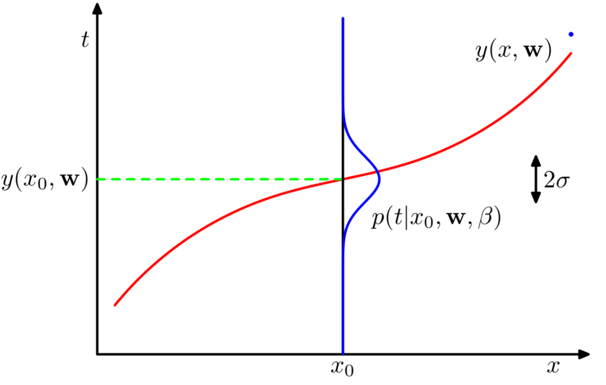

曲线拟合之概率回访
1 回忆
我们之前在 曲线拟合的过程中 采用的是最小化误差函数的方法来确定拟合的\(\mathbf{w}\)系数。拟合的多项式为：
\begin{equation} \label{eq:1} y(x, \mathbf{w}) = w_{0} + w_{1}x + \ldots + w_{M}x^{M} = \sum_{j=0}^{M}w_{j}x^{j} \end{equation}误差函数为：
\begin{equation} \label{eq:2} E( \mathbf{w}) = \frac{1}{2} \sum_{n=1}^{N}\{y(x_{n}, \mathbf{w}) - t_{n}\}^{2} \end{equation}在那里，我们为了解决过度拟合问题还采用了一种叫做正则化的方法。今天，我们从概率的角度来审视多项式曲线拟合问题。通过概率角度，我们可以更深入的理解误差函数和正则化。
2 贝叶斯估计
曲线拟合的目的是对于给定输入\(x\)估计输出\(t\)。当然，我们有训练数据：对于\( \mathbf{x}= (x_{1},\ldots ,x_{N})^{T}\)，对应的值是\( \mathbf{t} = (t_{1},\ldots ,t_{N})^{T}\)。对于任意的新的输入值\(x\)，我们可以把对\(t\)的估计写成一个条件概率估计。什么样的概率密度函数最合适呢？正态分布最合适 !即，对于给定的输入\(x\)，我们假设\(t\)具有正态分布，均值是\(y(x, \mathbf{w})\):
\begin{equation} \label{eq:3} p(t|x, \mathbf{w}, \beta) = \mathcal{N} (t| y(x, \mathbf{w}), \beta^{-1}) \end{equation}其中\(\beta\)是精度参数，等于(\ref{eq:3})的方差的导数，即\(\beta^{-1} = \sigma^{2}\)。
式(\ref{eq:3})的示意图如1所示。

图 1: 式(\ref{eq:3})的示意图
从图1 中可以看出蓝色曲线就是假设的高斯分布。而精度值\(\beta\)体现了分布的方差。
现在我们用不同于 以往 的方法来求\(\mathbf{w},\beta\)。如果所有的训练数据都是从(\ref{eq:3}) 中独立获得的，也就是说假设\( \mathbf{t} \)是独立同分布的。那么关于\( \mathbf{t},\mathbf{x} \)分布的似然函数是：
\begin{equation} \label{eq:4} p( \mathbf{t} | \mathbf{x}, \mathbf{w},\beta) = \prod_{n=1}^{N} \mathcal{N}(t_{n}|y(x_{n}, \mathbf{w}), \beta^{-1} ) \end{equation}其中:
\begin{equation} \label{eq:5} \mathcal{N} (y| \mu, \sigma^{2} ) = \frac{1}{\sqrt{2\pi \sigma^{2}}} e^{-\frac{(x-\mu)^{2}}{2\sigma^{2}}} \end{equation}把(\ref{eq:5})带入(\ref{eq:4})，并对(\ref{eq:4})左右两端取自然对数：
\begin{equation} \label{eq:6} \ln p( \mathbf{t} | \mathbf{x}, \mathbf{w}, \beta) = -\frac{\beta}{2}\sum_{n=1}^{N}(y(x_{n}, \mathbf{w}) - t_{n})^{2} + \frac{N}{2}\ln \beta - \frac{N}{2}\ln(2\pi) \end{equation}我们从(\ref{eq:6})推出曲线拟合系数\(\mathbf{w}\)的最大似然解。显然，我们可以忽略(\ref{eq:6})的后两项，因为这两项与\(\mathbf{w}\)没有关系。另外我们也发现\(\mathbf{w}\)的最大似然解与等号右边第一项的系数也没有关系，这个系数只是起到缩放作用，我们还可以把\(\beta/2\)用\(1/2\)代替。最大化似然函数等效于最小化负的似然函数。最后我们发现最大化(\ref{eq:6})和最小化(\ref{eq:2})是一回事儿。 因此(\ref{eq:2})所示的误差函数最小值的解是假定噪声为高斯噪声的最大似然解。
另外我们还可以使用最大似然准则求得精度值\(\beta\)的最优解。把(\ref{eq:6})当做\(\beta\)的函数，我们有\(\beta\)的最大似然解满足：
\begin{equation} \label{eq:7} \frac{1}{\beta_{ML}} = \frac{1}{N} \sum_{n=1}^{N}(y(x_{n}, \mathbf{w}) - t_{n})^{2} \end{equation}所以我们可以先求得\(\mathbf{w}\)的最大似然解\(\mathbf{w_{ML}}\)，然后求得\(\frac{1}{\beta_{ML}}\)。如此，我们便得到了所需高斯分布的两个重要参数，对于任意输入\(x\)，我们可以使用这个模型来估计\(t\)。
3 概率模型
现在我们有了\(\mathbf{w}_{ML}\)，\(\frac{1}{\beta_{ML}}\)，我们就有了一个概率模型：
\begin{equation} \label{eq:8} p(t|x, \mathbf{w}_{ML}, \beta_{ML}) = \mathcal{N}(t| y(x, \mathbf{w}_{ML}), \beta_{ML}^{-1} ) \end{equation}对于给定的\(x\)我们用(\ref{eq:1})来计算其均值\(y(x, \mathbf{w}_{ML})\)，然后用(\ref{eq:8})给出\(t\)的估计。
现在让我们更深入的理解这个问题。首先，我们引入对(\ref{eq:1})中系数\(\mathbf{w}\)的一个先验估计：
\begin{equation} \label{eq:9} p( \mathbf{w} | \alpha) = \mathcal{N}( \mathbf{w} | \mathbf{0}, \alpha^{-1} \mathbf{I}) = (\frac{ \alpha}{ 2\pi})^{(M+1)/2} \exp(-\frac{\alpha}{2} \mathbf{w}^{T} \mathbf{w}) \end{equation}其中\(\alpha\)是先验概率分布的精度。\(M+1\)是\(M\)阶多项式中的系数个数。\(\alpha\)控制着模型的参数（式(\ref{eq:1})的参数），我们称\(\alpha\)为超参数。据贝叶斯理论\(\mathbf{w}\)的后验分布与先验分布和似然函数成比例，即：
\begin{equation} \label{eq:10} p(\mathbf{w} | \mathbf{x},\mathbf{t}, \alpha,\beta) \propto p( \mathbf{t} | \mathbf{x}, \mathbf{w},\beta)p( \mathbf{w} | \alpha) \end{equation}利用给定的训练数据，我们通过最大化后验概率来确定\(\mathbf{w}\)。这个准则叫做最大后验概率准则(maximum posterior, MAP). 结合(\ref{eq:10})(\ref{eq:6})(\ref{eq:9})，我们发现最大后验概率等效于最小化(\ref{eq:11})：
\begin{equation} \label{eq:11} \frac{\beta}{2}\sum_{n=1}^{N} (y(x_{n}, \mathbf{w}) - t_{n} )^{2} + \frac{\alpha}{2} \mathbf{w}^{T} \mathbf{w} \end{equation}即，最大化后验概率等效于最小化带有正则参数\(\lambda = \alpha/\beta\)的均方误差函数。
4 我们离真正的贝叶斯估计有多远
截止目前，尽管我们引入了\(\mathbf{w}\)的一个先验估计\(p(\mathbf{w}|\alpha)\)，但是我们还是在做\(\mathbf{w}\)的点估计，算不得真正的贝叶斯方法。因为“纯真血统”的贝叶斯方法需要一直使用概率的和积准则。这个和积准则的使用牵涉到边缘概率的计算。而边缘概率的计算是使用贝叶斯方法进行模式识别的核心内容。
在曲线拟合问题中，给定了训练数据\(\mathbf{x}, \mathbf{t}\)，还有一个测试点\(x\)，我们的目标是估计\(t\)。因此，我们希望对\(p(t|x, \mathbf{w}, \mathbf{t})\)做一个评估。
贝叶斯估计求解\(p(t|x, \mathbf{w}, \mathbf{t})\)的过程应该是：
\begin{equation} \label{eq:12} p(t| x, \mathbf{x}, \mathbf{t}) = \int p(t | x, \mathbf{w})p( \mathbf{w} | \mathbf{x}, \mathbf{t}) \mathrm{d} \mathbf{w} \end{equation}式 (\ref{eq:12}) 中\(p(t| x, \mathbf{w})\)由 (\ref{eq:3})给出。此处，我们准备忽略\(\alpha, \beta\)来简化符号表示。 \(p( \mathbf{w} | \mathbf{x}, \mathbf{t})\)是 参数\(\mathbf{w}\)的后验概率，可以对 (\ref{eq:10})归一化获得。稍后我们会发现，对于曲线拟合问题，这个后验概率分布是高斯分布，进而式 (\ref{eq:12})可以推演成：
\begin{equation} \label{eq:13} p(t| x, \mathbf{x}, \mathbf{t}) = \mathcal{N}(t| m(x), s^{2}(x)) \end{equation}其中均值和方差为：
\begin{eqnarray} \label{eq:14} m(x) &=& \beta \mathbf{\phi}(x)^{T} \mathbf{S} \sum_{n=1}^{N}\mathbf{\phi}(x_{n})t_{n} \\ s^{2}(x) &=& \beta^{-1} + \mathbf{\phi}(x)^{T} \mathbf{S} \mathbf{\phi}(x) \end{eqnarray}矩阵\(\mathbf{S}\)为：
\begin{equation} \label{eq:15} \mathbf{S}^{-1} = \alpha \mathbf{I} + \beta\sum_{n=1}^{N} \mathbf{\phi}(x_{n}) \mathbf{\phi}(x)^{T} \end{equation}其中\(\mathbf{I}\)是单位阵。\(\mathbf{\phi}(x) = [\phi_{0}(x), \ldots ,\phi_{M}(x)], \phi_{i}(x) = x^{i}\) 我们看到式 (\ref{eq:14})所示的均值和方差依赖于\(x\)。方差的第一项\(\beta^{-1}\)代表了\(t\)的不确定度，这个不确定度是由噪声引起的。方差的第二项代表由\(\mathbf{w}\)带来的不确定度，这个不确定度是由贝叶斯方法带来的。